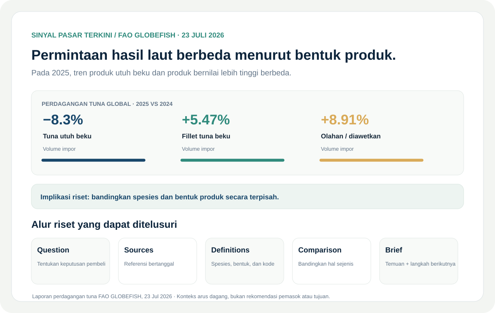
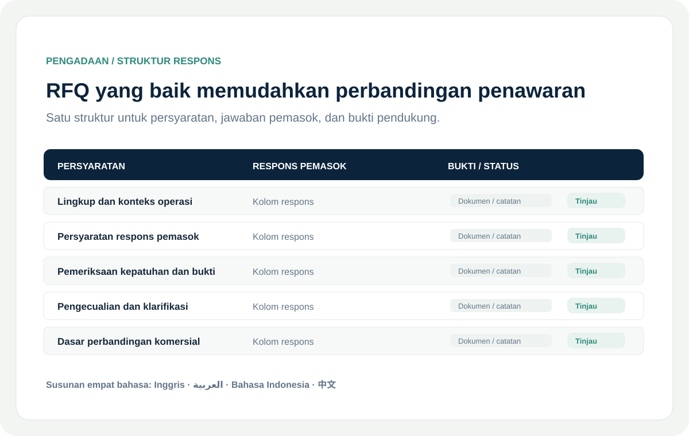
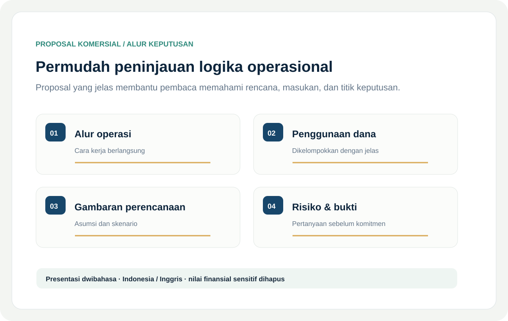
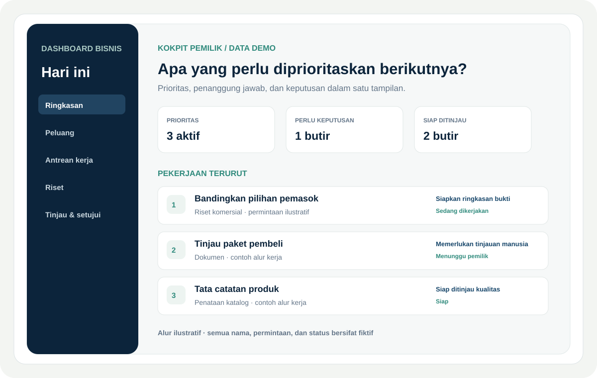

Operasi komersial
Ocean Pearl Seafood
Informasi produk yang jelas dan alur kerja siap pembeli untuk pengadaan serta koordinasi ekspor hasil laut.
Lihat hasil pekerjaan ↗Enam contoh karya di bidang operasi komersial, riset ekonomi, dokumentasi pengadaan, dan produk praktis berbantuan AI.
Informasi produk yang jelas dan alur kerja siap pembeli untuk pengadaan serta koordinasi ekspor hasil laut.
Lihat hasil pekerjaan ↗
Ubah informasi pasar yang terpencar menjadi analisis bersumber untuk mendukung keputusan bisnis.
Lihat hasil pekerjaan ↗
Format permintaan yang terstruktur membantu pemasok menjawab pertanyaan yang sama agar responsnya mudah dibandingkan.
Lihat hasil pekerjaan ↗
Jelaskan rencana operasi, penggunaan dana, dan titik keputusan dalam proposal dwibahasa yang rapi.
Lihat hasil pekerjaan ↗
Kokpit manajemen yang membantu pemilik usaha melihat prioritas berikutnya dan mengoordinasikan tindak lanjut.
Lihat hasil pekerjaan ↗
Pengalaman belajar berbasis peramban yang menata aktivitas berbantuan AI menjadi alur yang mudah digunakan siswa dan pengajar.
Lihat hasil pekerjaan ↗